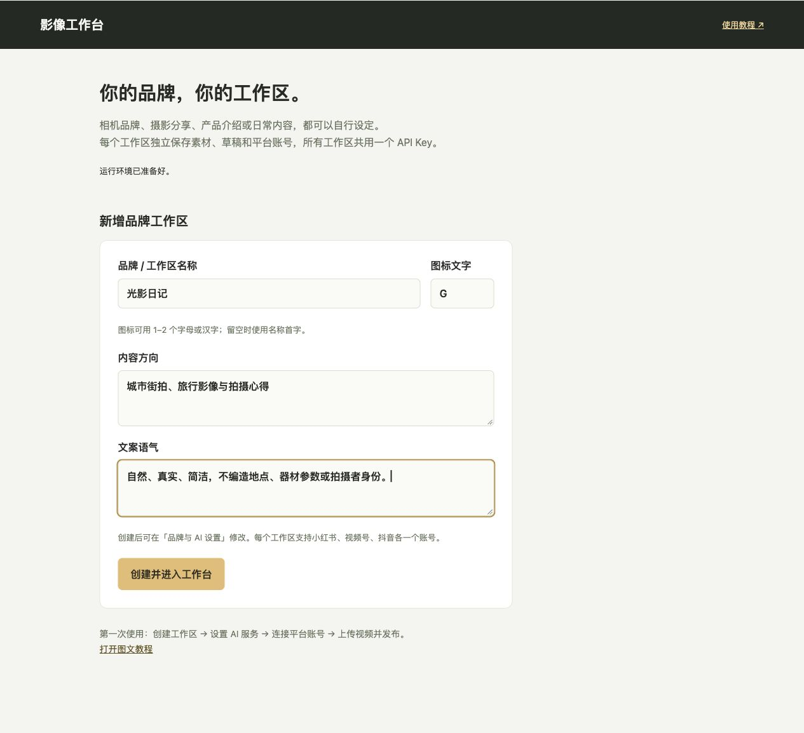
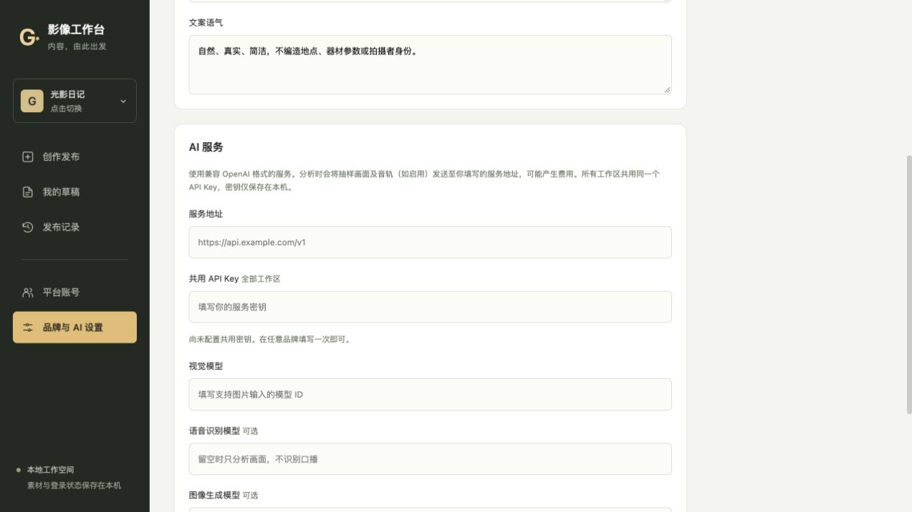
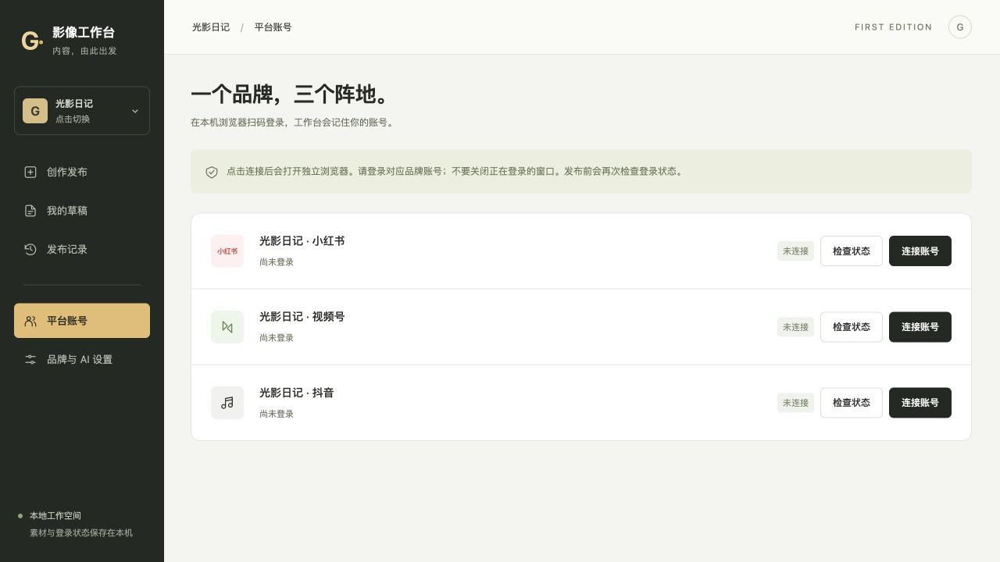
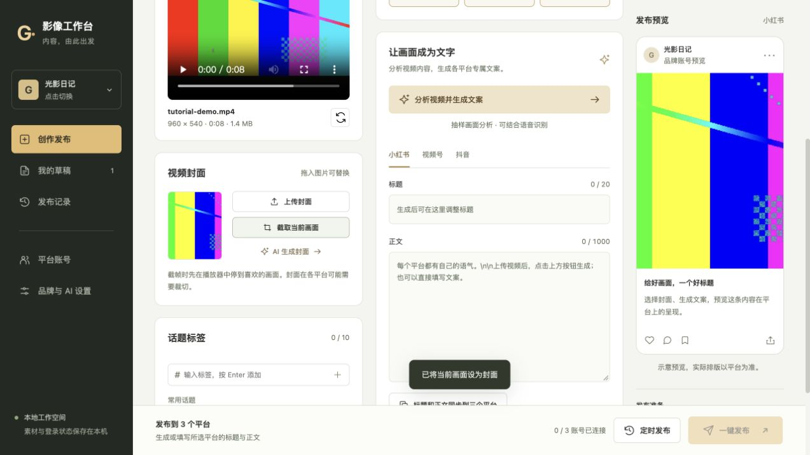
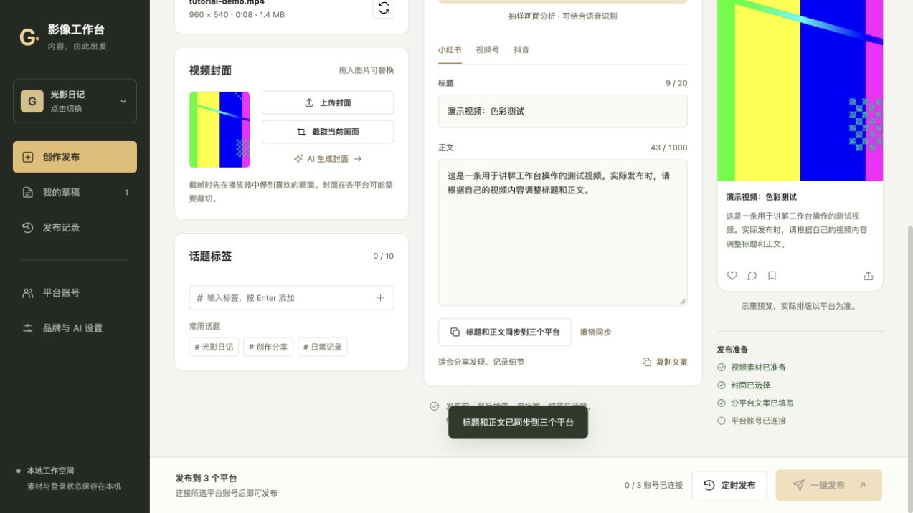
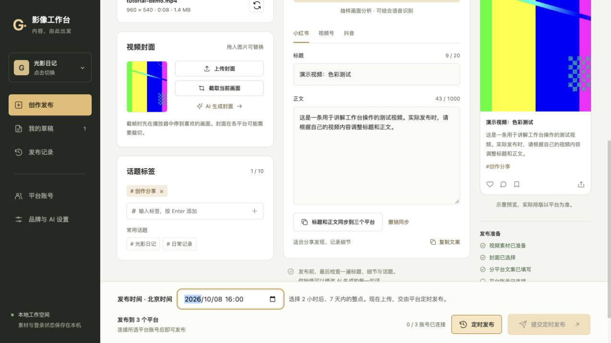
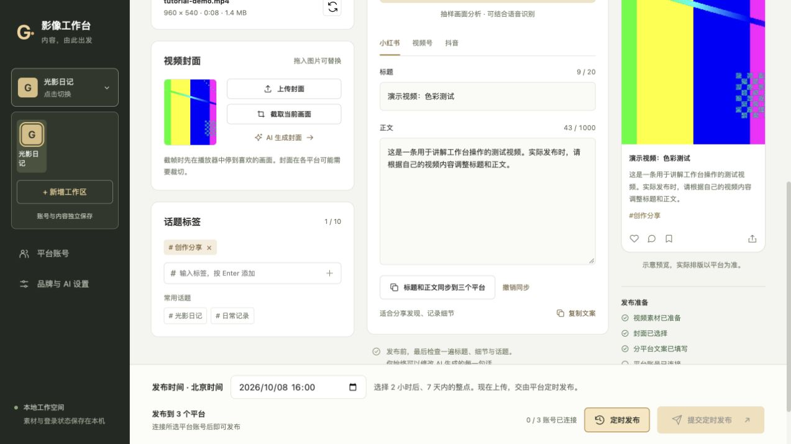
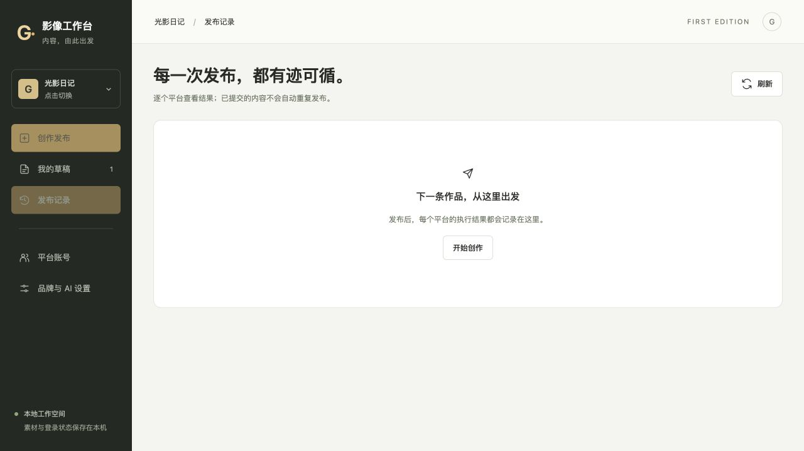

从安装，到第一条发布。
影像工作台使用教程 · Apple 芯片 Mac 版 · 1.0.1
真实界面截图与演示数据。未使用真实 API Key、未登录真实账号、未实际发布。本仓库提供图文使用说明。
1. 安装与第一次打开
- 适用：Apple 芯片 Mac，macOS 14 或更新版本。
- 双击 .pkg 安装包，完成后在「应用程序」打开「影像工作台」。
- 应用已内置 Python、FFmpeg 和 FFprobe；视频处理无需另外安装或联网下载。
- Safari 可打开工作台；自动登录和发布仍需安装 Google Chrome。
- 本安装包未做 Apple 开发者公证，系统若提示无法验证开发者，由使用者按 Apple 官方说明自行确认是否打开。
2. 创建你的品牌工作区
- 第一次打开进入创建页面；安装包没有预置账号、密钥或品牌。
- 填写品牌名称、1–2 个字的图标文字，以及内容方向。
- 例如「光影日记」，内容方向为城市街拍、旅行影像与拍摄心得。
- 点击「创建并进入工作台」；名称和内容方向以后还可修改。

3. 配置共用 AI 服务密钥
- 在「品牌与 AI 设置」填写兼容服务地址、自己的 API Key 和支持图片输入的视觉模型 ID。
- API Key 对全部工作区共用，填一次即可；留空保存时保留现有密钥。
- 服务地址和模型选择按工作区保存。新增工作区会沿用已有的非密钥模型配置作为默认值。
- 语音识别、AI 封面为可选项，需要服务分别兼容 audio/transcriptions 和 images/generations。
- 分析会将抽样画面及启用的音轨发给你配置的服务，费用由对应 API 服务收取。

4. 连接三个平台账号
- 打开「平台账号」，分别点击对应平台的「连接账号」。
- 在弹出的 Chrome 窗口中，登录当前品牌对应的小红书、视频号、抖音账号。
- 完成扫码及平台验证后，工作台校验成功才显示「已连接」。
- 每个工作区支持每个平台一个账号。创建新工作区后需要单独登录。

5. 上传视频与选择封面
- 把视频拖入素材区，或者点击「选择本地视频」。支持 MP4、MOV、M4V、WebM，最大 2GB。
- 封面可以直接拖入，也可以点击「上传封面」。图片支持 JPG、PNG、WebP，最大 20MB。
- 也可暂停到喜欢的画面，点击「截取当前画面」制作封面。
- 若配置了兼容图像生成模型，可以描述画面并生成 AI 封面。

6. 分析、修改与同步文案
- 配置 AI 后，点击「分析视频并生成文案」，根据抽样画面生成三平台标题与正文。
- 最多抽取 12 帧；不是逐帧理解。未配置语音模型时不识别口播。
- 逐个平台核对标题、正文和事实细节；也可以完全手动填写。
- 希望三个平台相同：在当前平台写好文案，点击「标题和正文同步到三个平台」。
- 同步后如果标题超长，请修改再发布；页面提供撤销同步。教程中的文案是手动演示文本。

7. 话题与可选定时发布
- 添加或选择话题，最多 10 个。选择本次要发布的平台。
- 立即发布：保持「定时发布」关闭，点击「一键发布」。
- 预约发布：打开「定时发布」，选择北京时间的整点。当前范围是 2 小时后至 7 天内。
- 点击「提交定时发布」会现在上传内容，并提交平台的定时发布流程。
- 视频、封面、有效文案和平台账号全部准备好后，发布按钮才可用。

8. 增加工作区与品牌切换
- 点击左侧品牌图标，展开工作区选择。点击对应图标即可切换。
- 点击「+ 新增工作区」，填写新的名称、图标和内容方向。
- 每个工作区独立保存账号、素材、草稿和发布记录；所有工作区共用 API Key。
- 切换前自动保存当前草稿；上传、分析或提交操作正在进行时先等待完成。
- 工作区设置尚未保存时会提示；已创建的发布任务继续在后台执行。

9. 核对结果与再次创作
- 发布后在「发布记录」查看每个平台的结果。
- 「已提交」表示观察到平台提交成功信号，不保证审核通过；请到平台核对展示和预约时间。
- 「未发布」可排除问题后重试；「待确认」先确认平台没有该内容，再重试。
- 所选平台全部提交成功后，当前对应草稿会清空。失败或待确认会保留草稿。
- 关闭浏览器不会停止后台服务。可用「停止工作台.command」停止；有活动任务时会拒绝停止。

遇到问题先检查这里
- 按钮灰色：检查视频、封面、所选平台文案字数和账号连接。
- AI 失败：检查 HTTPS 服务地址、模型是否支持图片、Key 和额度；语音或图像模型不兼容时可以先留空。
- 账号失效：到对应工作区重新登录，再检查状态。
- 素材无法读取：新版已内置 FFmpeg；请确认素材为有效 MP4/JPG 文件，必要时查看运行日志。
- 保存位置：
~/Library/Application Support/ImageStudio。其中包含自己的密钥、登录状态和素材；转发给别人时只发原始安装包和教程。 - 更新应用不会覆盖该数据目录。卸载应用也不会自动删除这里的数据。